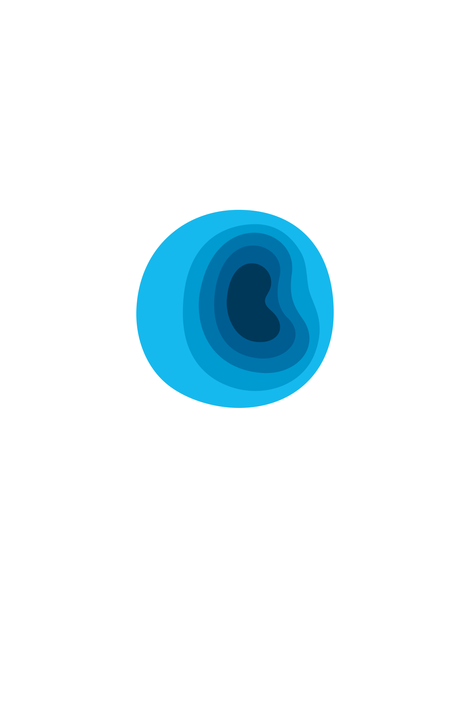

<ion-menu [content]="content" persistent=true swipeEnabled=true>
    <ion-header>
        <ion-toolbar color="primary_light">
            <!--  -->
            <div class="user_info" *ngIf="isUserData; else userDetail ">
                <div class="div_circle">
                    <!-- <ion-icon name="football"></ion-icon> -->
                    <!-- <ion-avatar item-start class="avatar">
                        <ion-icon class="avatar_icon" name="person"></ion-icon>
                    </ion-avatar> -->
                </div>
                <h6 class="user_info_name">{{userDetails.username}}</h6><br>
                <h6 class="user_info_email">{{userDetails.email}}</h6>
            </div>

            <ng-template #userDetail>

            </ng-template>

        </ion-toolbar>
    </ion-header>

    <ion-content>
        <ion-list no-lines class="sideMenuList">
            <button ion-item (click)="goToHome()" menuClose><ion-icon class="menu_icons" name="home"></ion-icon><span class="sideMenuText">Home</span></button>
            <button ion-item (click)='goToRequest()' menuClose><ion-icon class="menu_icons" name="done-all"></ion-icon><span class="sideMenuText">Request</span></button>
            <button ion-item (click)='goToSuggestion()' menuClose><ion-icon class="menu_icons" name="information-circle"></ion-icon><span class="sideMenuText">Suggestions</span></button>
            <button ion-item (click)='openVisitModal()' menuClose><ion-icon class="menu_icons" name="person"></ion-icon><span class="sideMenuText">Visitors</span></button>
            <button ion-item (click)="logout()" menuClose><ion-icon class="menu_icons" name="power"></ion-icon><span class="sideMenuText">Logout</span></button>
        </ion-list>
    </ion-content>
</ion-menu>


<ion-nav [root]="rootPage" #content></ion-nav>